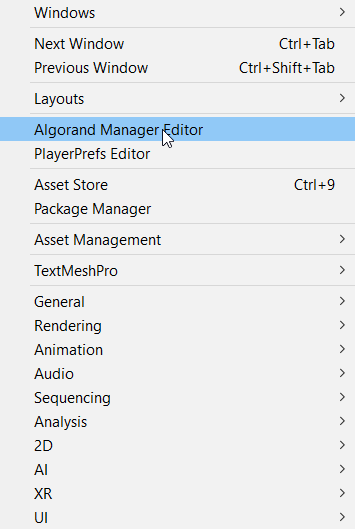
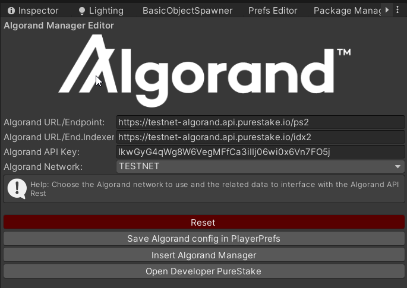

AlgorandUnity SDK is a comprehensive set of tools that will bring the power of Algorand blockchain within Unity to empower developers to develop Algorand features inside their Unity projects.
With both the C# SDK (.NET platform) and the interface to the Algorand BlockChain (https://github.com/RileyGe/dotnet-algorand-sdk), Unity developers can exploit to integrate the power of Algorand within their work. The Unity Package will contain:
The whole package will be compatible with the management system used by Unity, as described in the following document: https://docs.unity3d.com/Packages/com.unity.package-manager-ui@1.8/manual/index.html and it will also be available through the Assets Store: https://unity3d.com/asset-store/sell-assets
The entire project will be released under the MIT license: https://opensource.org/licenses/MIT
Open source components and libraries used in the project:
Four main features will be developed:
List of all C# property, methods and events in Algorand SDK: https://rileyge.github.io/dotnet-algorand-sdk/api/index.htm
The centralized AlgorandManager SDK developed for Unity will allow the complete management of the Account of the Algorand BlockChain:
Mandatory features to use Algorand within a gaming project include:
As in the Algorand Payment Transactions, the following will be available for ASAs:
To install SDK you can use different methods:
After loading the AlgorandUnitySDK, a new item entitled “Algorand Manager Editor” will be automatically loaded in the main Unity Window Menu. Selecting it will create its floating window.

It is necessary to set a new token and create a new account of the PureStake service or set URI of your ALGOD/IDX2 Daemons.

After installing the Prefab AlgorandManager in the scene you can use it for development. Installation is possible in two ways:
To see the list of properties, methods and events associated with AlgorandManager, refer to the Documentation folder. If you want to create a C# script in Unity please see this guide: https://docs.unity3d.com/Manual/CreatingAndUsingScripts.html
Below is a list with code examples of the methods and properties that the AlgorandManager instance makes available to the Unity developer:
//Show AlgorandManager SDK Version
Debug.Log("AlgorandManager SDK Version: "+AlgorandManager.Instance.Version());//Create new account
NewAccount = AlgorandManager.Instance.GenerateAccount();
//Show Mnemonic Algorand Account Passphrase
Debug.Log(NewAccount);WARNING: The GenerateAccount() method returns a Pass Phrase in BIP 39 string format. Keep it secret!
//Reload Algorand Account using Passphrase in AlgorandManager Instance
NewAddress = AlgorandManager.Instance.LoadAccountFromPassphrase(NewAccount);
//Show Algorand Account Address
Debug.Log(NewAddress);//Get Mnemonic Algorand Account BIP 39 Passphrase
Debug.Log(AlgorandManager.Instance.GetMnemonicPassphrase());WARNING: The GetMnemonicPassphrase() method returns a Pass Phrase in BIP 39 string format. Keep it secret!
//Get Algorand Account Address from AlgorandManager Instances
Debug.Log(AlgorandManager.Instance.GetAddressAccount());//Verify Algorand Account Address passed
Debug.Log("Valid Algorand Address: " + AlgorandManager.Instance.AddressIsValid(NewAddress));//Save Algorand Account using Passphrase in AlgorandManager Instance in encrypted PlayerPrefs
Debug.Log("Save Algorand Account in encrypted PlayerPrefs: " + AlgorandManager.Instance.SaveAccountInPlayerPrefs(NewAccount));//Load Algorand Account from encrypted PlayerPrefs
NewAddress = AlgorandManager.Instance.LoadAccountFromPlayPrefs();//Show ALGOD/PureStake URL saved in PlayerPrefs
Debug.Log("URL ENDPOINT: "+AlgorandManager.Instance.ALGOD_URL_ENDPOINT);//Get Wallet Amount of Algorand Address Account
var amountnow = AlgorandManager.Instance.GetWalletAmount(AlgorandManager.Instance.ALGOD_URL_ENDPOINT, AlgorandManager.Instance.ALGOD_TOKEN, AlgorandManager.Instance.GetAddressAccount());
Debug.Log("MicroAlgos: "+amountnow);//Get Healthy ( Free 1 req/ 1 sec Purestack)
//Debug.Log("Algorand Health: "+AlgorandManager.Instance.GetHealth(AlgorandManager.Instance.ALGOD_URL_ENDPOINT_INDEXER, AlgorandManager.Instance.ALGOD_TOKEN));//Get Account Amount
Debug.Log("Account Amount (KV2XGKMXGYJ6PWYQA5374BYIQBL3ONRMSIARPCFCJEAMAHQEVYPB7PL3KU): "+
AlgorandManager.Instance.GetAccount(AlgorandManager.Instance.ALGOD_URL_ENDPOINT_INDEXER,
AlgorandManager.Instance.ALGOD_TOKEN,
"KV2XGKMXGYJ6PWYQA5374BYIQBL3ONRMSIARPCFCJEAMAHQEVYPB7PL3KU"), false);//GetAsset Info
var jsonResult = AlgorandManager.Instance.GetAsset(AlgorandManager.Instance.ALGOD_URL_ENDPOINT_INDEXER,
AlgorandManager.Instance.ALGOD_TOKEN,
15187601);
//Using simple JSON Parser: https://wiki.unity3d.com/index.php/SimpleJSON
var N = JSON.Parse(jsonResult);
//Show Asset Total Example
Debug.Log("Asset Total: "+N["asset"]["params"]["total"]);
//Show Creator Example
Debug.Log("Creator: "+N["asset"]["params"]["creator"]);//Search last 5 Transactions
var jsonResult = AlgorandManager.Instance.SearchTransactions(AlgorandManager.Instance.ALGOD_URL_ENDPOINT_INDEXER,
AlgorandManager.Instance.ALGOD_TOKEN, "KV2XGKMXGYJ6PWYQA5374BYIQBL3ONRMSIARPCFCJEAMAHQEVYPB7PL3KU");
//Using simple JSON Parser: https://wiki.unity3d.com/index.php/SimpleJSON
var N = JSON.Parse(jsonResult);
//Debug.Log(jsonResult);
//Show Current Round Example
Debug.Log("Current Round: "+N["current-round"]);//Transfert Algo from your Accout to another Algorand Address
Debug.Log("TxID: "+AlgorandManager.Instance.MakePaymentTransaction(AlgorandManager.Instance.ALGOD_URL_ENDPOINT,
AlgorandManager.Instance.ALGOD_TOKEN,
"KV2XGKMXGYJ6PWYQA5374BYIQBL3ONRMSIARPCFCJEAMAHQEVYPB7PL3KU", 0.01, "Test using AlgorandUnitySDK: "+AlgorandManager.Instance.Version()));